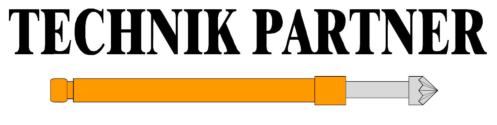
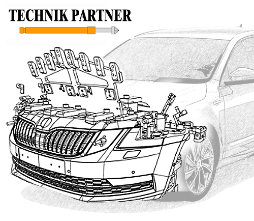

<!DOCTYPE html>
<html lang="en">
<head>
    <meta charset="UTF-8">
    <title>Aktuality</title>
</head>
<body>

</body>
</html>
<!DOCTYPE html>
<html lang="en">
<head>
    <meta charset="UTF-8">
    <title>Žádost o zaslání materiálu</title>


    <link rel="stylesheet" href="../CSS/style.css">
</head>
<body>
<body>


<header class="header">
    <div class="divLogo">
        
    </div>

    <ul class="navULCislo">

        <li><h5>
            Neváhejte a kontaktujte nás
        </h5>
        </li>
        <li>
            
            <a href="none">+420 220 294 490</a>

        </li>
    </ul>

</header>

<div class="body1">

    <nav class="nav">
        <div class="navU1Div">
            <ul class="navUl">
                    <li><a href="index.html">Hlavni stranka</a></li>
                <li><a href="produkty.html">ŽÁDOST O ZASLÁNÍ MATERIÁLU</a></li>
                <li><a href="objednavky.html">OBJEDNÁVKY</a></li>
                <li><a href="aktuality.html">AKTUALITY</a></li>
                <!--<li><a href="fotogalerie.html">FOTOGALERIE</a></li>-->
                <li><a href="kontakty.html">KONTAKTY</a></li>
                <!--<li><a href="kariera.html">KARIÉRA</a></li>-->
            </ul>
        </div>

    </nav>

    <div style="float:left; width:40%">
       
</div>

<div style="float:left; width:60%">

    <ul>
        
        
        <li>
        <a href="vystavy.html">Kde nás můžete vidět?</a></li>
        <p>Zabýváme se konstrukcí a výrobou kontrolních a měřících přípravků a měřících a montážních pracovišť. Každoročně nás můžete vidět na výstavaách a veletrzích jako je 
            <ul><li>Veletrh AMER</li>
            <li>Mezinárodní strojírenský veletr v Brně</li>
            <li>Mezinárodní veletrh elektrotechniky, elektroniky a energetiky ELOSYS v Trenčíně</li> 

            
            
        </ul>
        </p>
        <li>
            <a href="clanky.html">Svět techniky</a></li>"
            <p>Námi navržená měřidla kontrolují jak plechové výlisky, svařence a sestavy, tak exteriérové a interiérové plastové díly a jejich sestavy. Různé typy našich produktů se používají v prototypové, předsériové i sériové fázi automobilové výroby.
            Co je nového ve světe techniky?</p>
            <li>
                <a href="kariera.html">Kariéra</a></li>"
                <p>sme 100% česká společnost, v současnosti (2018) zaměstnáváme 50 kvalifikovaných pracovníků. Více než polovinu naší každoroční produkce vyvážíme do zemí EU a Ruska. Pojďte se přidat do našeho týmu. S Vámi budeme silnější!</p>


        </ul>
        </div>